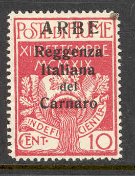

(Arbe, example, reduced size)
Return To Catalogue - Fiume - Italy
Note: on my website many of the
pictures can not be seen! They are of course present in the
catalogue;
contact me if you want to purchase the catalogue.
Some stamps of Fiume were overprinted with "ARBE" or "VEGLIA" in 1920. Both overprints exist in 2 sizes. If I'm well informed these were military stamps.
(Arbe, example, reduced size)


Veglia overprints